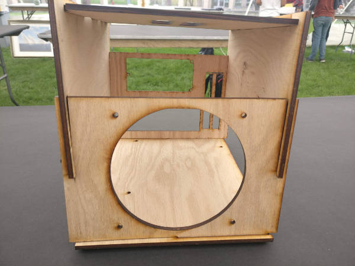
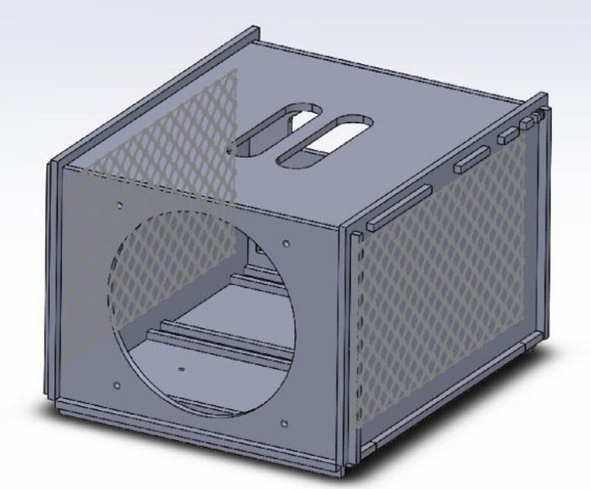
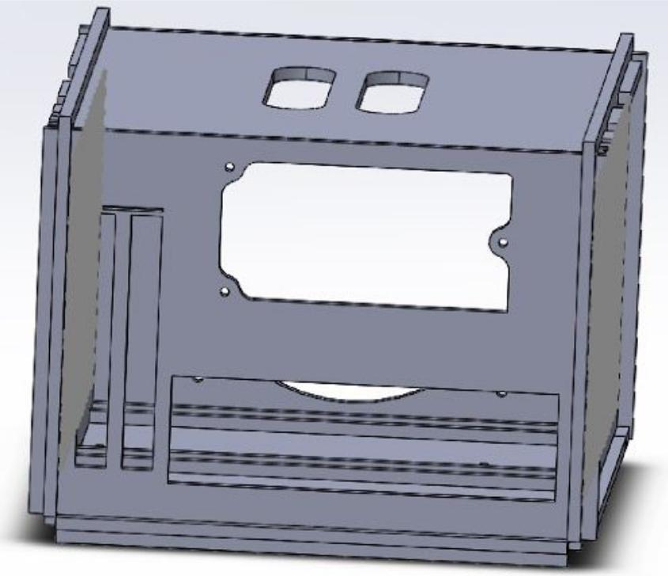
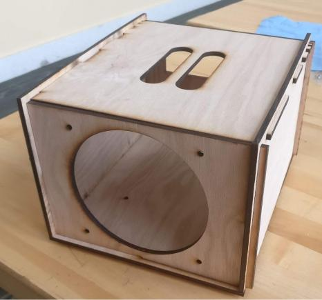
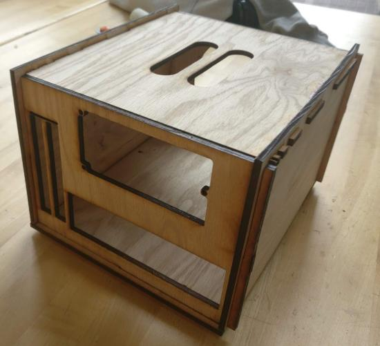
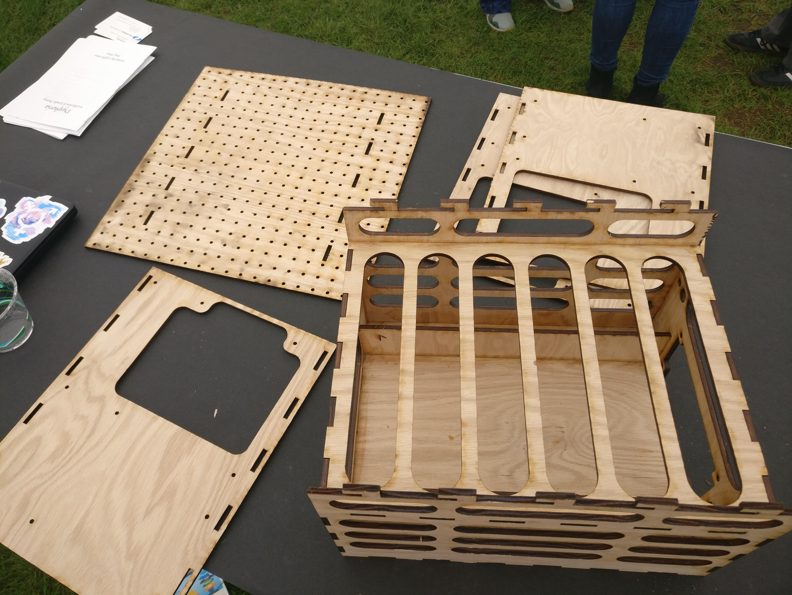
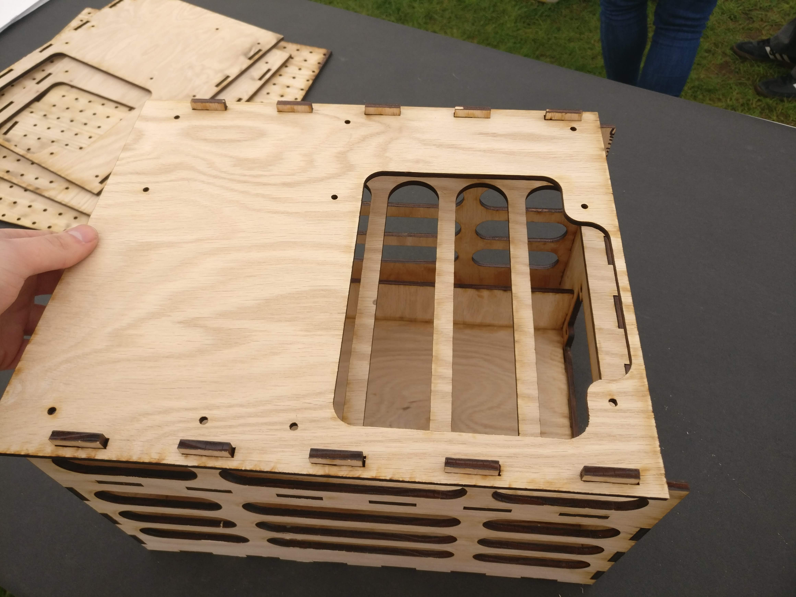
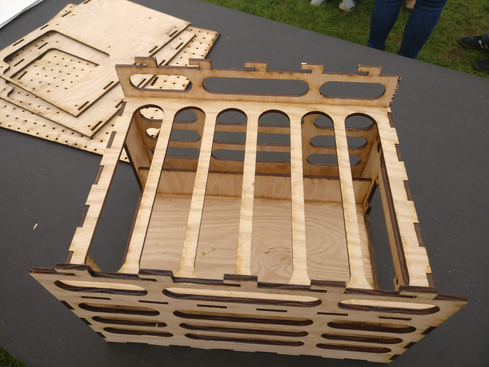
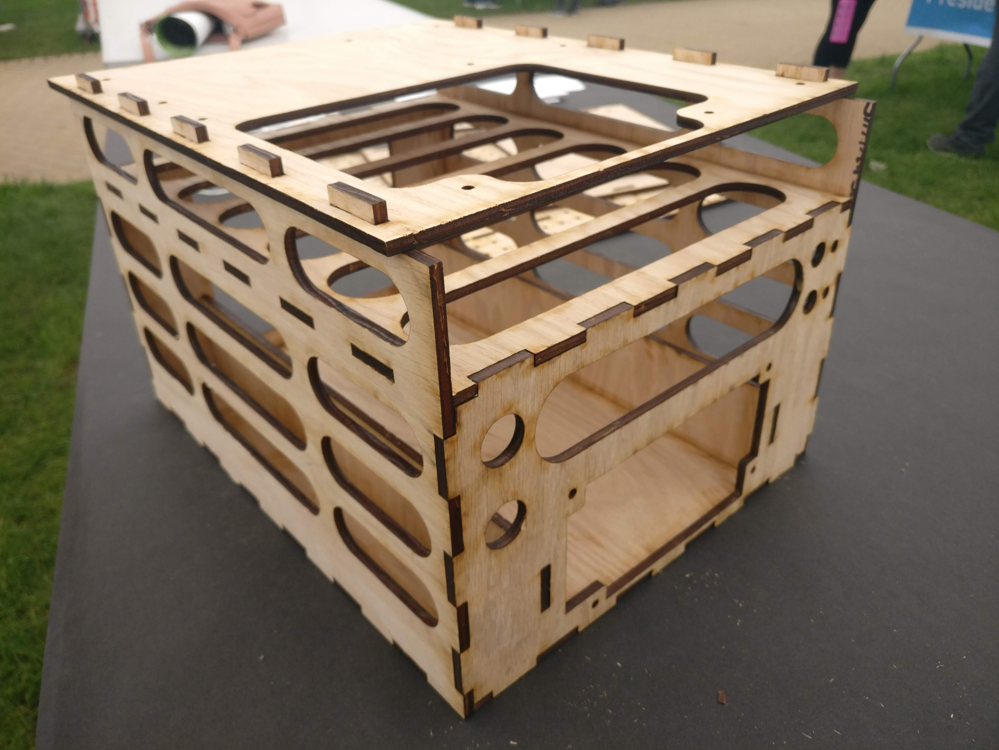
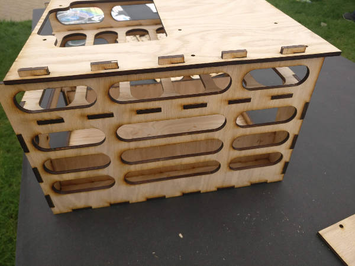

Maeve Stites
Electrical and Computer Engineering B.S. - Olin College of Engineering.
Searching for full time engineering or data science job.

Overview
Spurred by frustrations with existing products on the market, I experimented with new designs for compact and portable computer cases. I tested a number of different designs which could in the future be developed into a more refined product.
The cases were made by laser cutting plywood. This method was chosen because it is a cheap and fast prototyping method. I designed the cases in SolidWorks.
Documentation and Details
Mock computer compoonents used for testing the cases.
Slotted Case
Testing computer case slot assembly method. This was chosen to avoid having to use glue.
Solidworks assembly of the case. The top has a handle for easy transport. The case slots together to ease the assembly process.
Solidworks assembly of the back of the case. The power supply is mounted above the motherboard IO for space conservation.
Front of the case.
Rear of the case.
Test Bench
Computer case test bench. Uses a slotting method to allow easy swapping of the top panels, to easily change motherboards. I created two top panels: a standard ATX motherboard panel, and one with a grid of holes for use on server motherboards with non-standard mounting systems.
 Demonstrating the sliding method to swap top panels.

Access hole for easily managing cables for the test bench system. In this photo, you can also see the side storage for hard drives and other accessories.
Back side of the test bench case. Mounts for power buttons, ATX power supply, and watercooling tube pass throughs.
Side of the test bench case. Ellipse cut out shape chosen to make them easy to use as handles. They also provide a way to pass cables through from the case basement to the top.